<!DOCTYPE html>
<html lang="en">
<head>
    <meta charset="UTF-8">
    <title>CHAPTER 01</title>
    <style>
    :root { 
        --bg: #0e0e0e; 
        --page-bg: #151515; 
        --white-raw: 255, 255, 255; 
    }
    
    body { 
        font-family: 'Segoe UI', sans-serif; 
        background-color: var(--bg); 
        margin: 0;
        display: flex; 
        flex-direction: column; 
        align-items: center; 
        min-height: 100vh;
        transform: scale(0.8); 
        transform-origin: top center; 
        width: 125%; 
        left: -12.5%; 
        position: relative;
    }

    .book-spread {
        display: grid; 
        grid-template-columns: 1fr 1fr; 
        width: 1200px; 
        height: 850px;
        background: var(--page-bg); 
        border: 1px solid #222; 
        box-shadow: 15px 15px 0px #000;
        position: relative; 
        margin-top: 50px;
    }

    .book-spread::before { 
        content: ""; 
        position: absolute; 
        left: 50%; top: 0; bottom: 0; 
        width: 1px; 
        background: #222; 
        transform: translateX(-50%); 
        z-index: 5; 
    }

    .page { 
        padding: 60px 80px; 
        position: relative; 
        overflow: hidden; 
        display: flex; 
        flex-direction: column; 
        height: 100%; /* Ensures centering works */
    }

    /* --- NARRATIVE STYLE --- */
    .content p {
        font-size: 1.15rem; 
        font-weight: 400; 
        line-height: 1.6;
        margin-bottom: 20px;
        color: rgba(var(--white-raw), 0.75);
    }

    /* --- DIALOGUE STYLE --- */
    .d {
        display: flex !important;
        align-items: flex-start; /* Better for multi-line dialogue */
        color: rgba(var(--white-raw), 1.0);
        margin: 10px 0 20px 0;
        padding: 8px 12px;
        background: rgba(255,255,255,0.05);
        border-radius: 4px;
        font-size: 1.15rem;
        font-weight: 400;
    }

    /* Vertical bar ONLY for dialogue */
    .d::before {
        content: "";
        display: inline-block;
        min-width: 3px;
        height: 1.2rem; 
        background: rgba(var(--white-raw), 0.4);
        margin-right: 12px;
        margin-top: 4px;
        border-radius: 2px;
    }

    /* --- THE SCREAM (HUGE TEXT) --- */
.s {
    /* [1] KILL THE INHERITED DIALOGUE BAR */
    display: block !important; 
    background: transparent !important; 
    padding: 0 !important;
    border: none !important;
    
    /* [2] TEXT SPECS */
    font-size: 4.5rem !important; 
    font-weight: 900 !important;
    color: rgba(var(--white-raw), 1.0) !important;
    line-height: 1;
    text-align: center;
    margin: auto 0 !important; 
    word-break: break-all; 
    letter-spacing: -2px;
    text-decoration: none !important; /* Forces no literal strikethrough */
}

/* [3] HARD DELETE THE VERTICAL BAR FOR SCREAMS */
.s::before {
    content: none !important;
    display: none !important;
    width: 0 !important;
    height: 0 !important;
    margin: 0 !important;
}

    .nav-zone { position: absolute; top: 0; bottom: 0; width: 50%; z-index: 10; cursor: pointer; }
    .left-zone { left: 0; } .right-zone { right: 0; }
    .no-padding { padding: 0 !important; }
    .no-padding .content img { width: 100%; height: 850px; object-fit: cover; display: block; }

    .footer-nav { margin: 80px 0 120px 0; width: 100%; display: flex; justify-content: center; }
    .menu-btn { 
        text-decoration: none; 
        color: rgba(var(--white-raw), 0.5); 
        padding: 12px 30px; 
        font-size: 0.85rem; 
        border: 1px solid #333; 
        transition: 0.2s;
    }
    .menu-btn:hover {
        color: rgba(var(--white-raw), 1.0);
        border-color: #555;
    }
</style>
</head>
<body>

<script>
    /* STORY INPUT */
    const MY_STORY = [
        "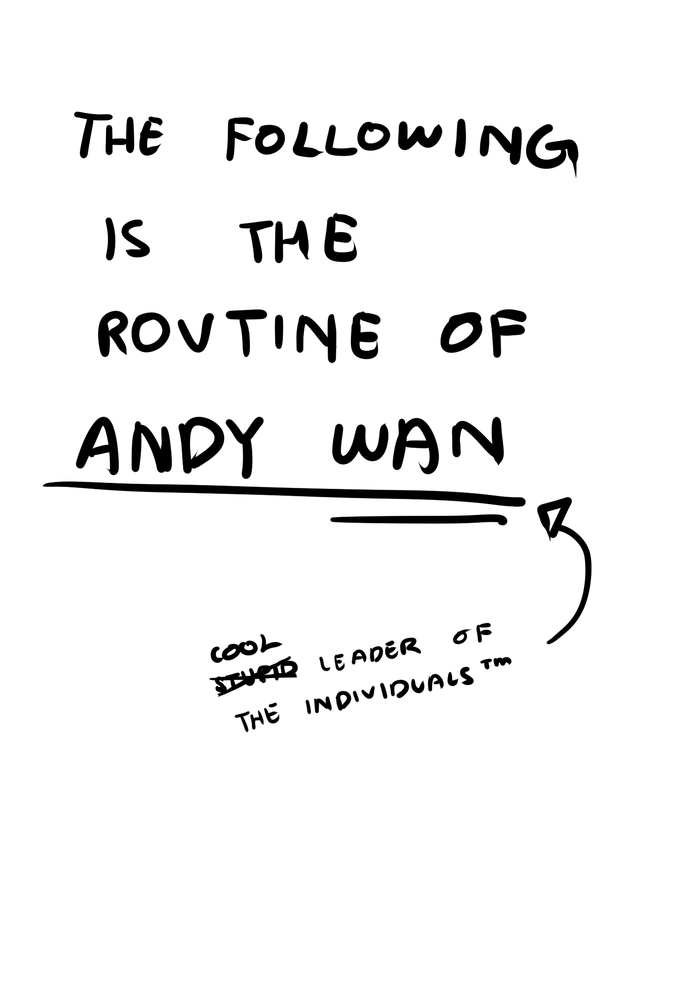",
        "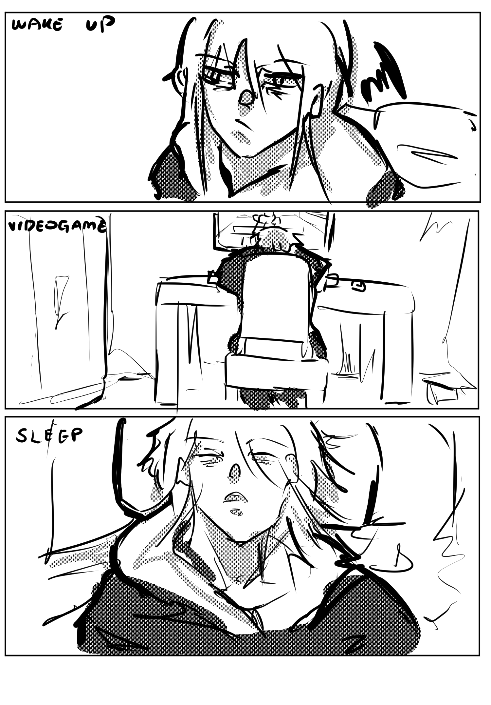",
        "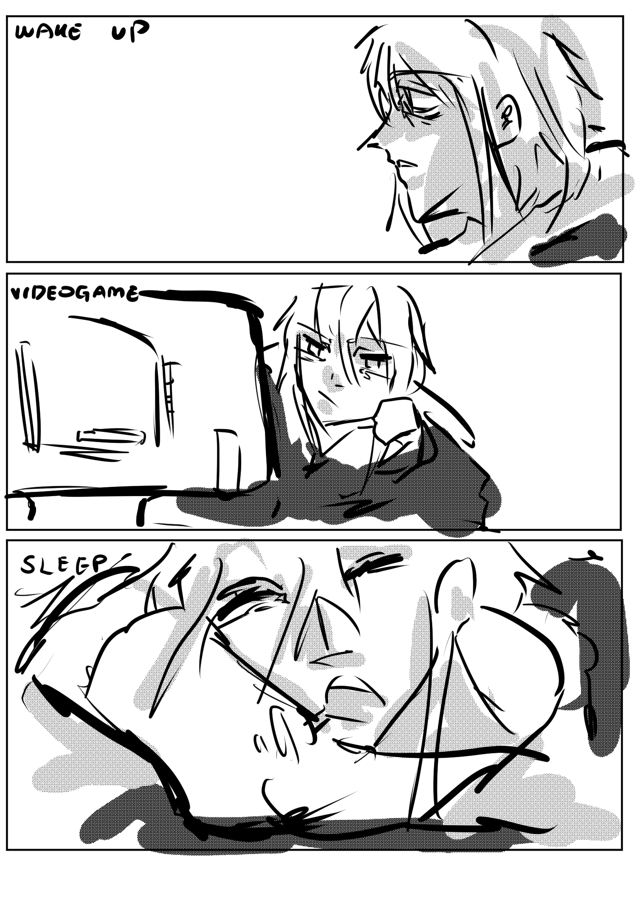",
        "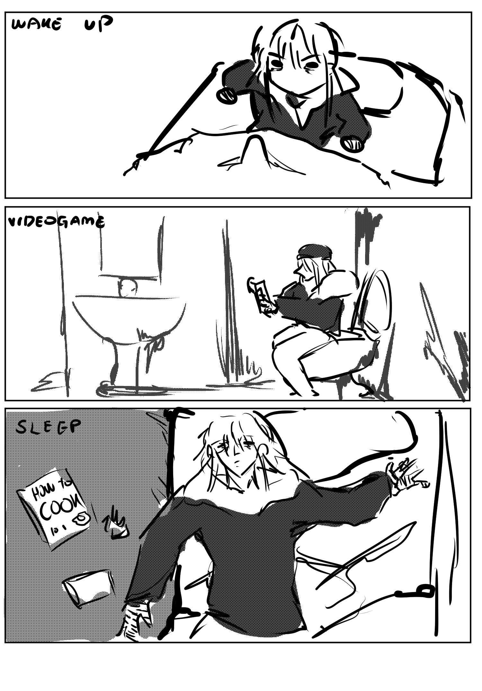",
        "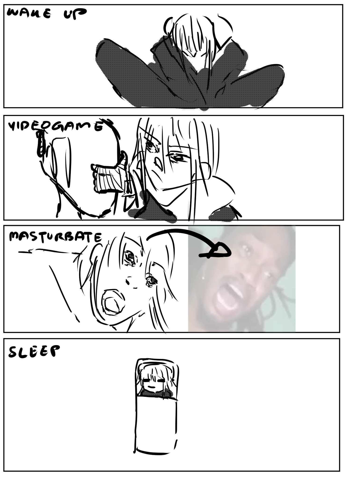",
        "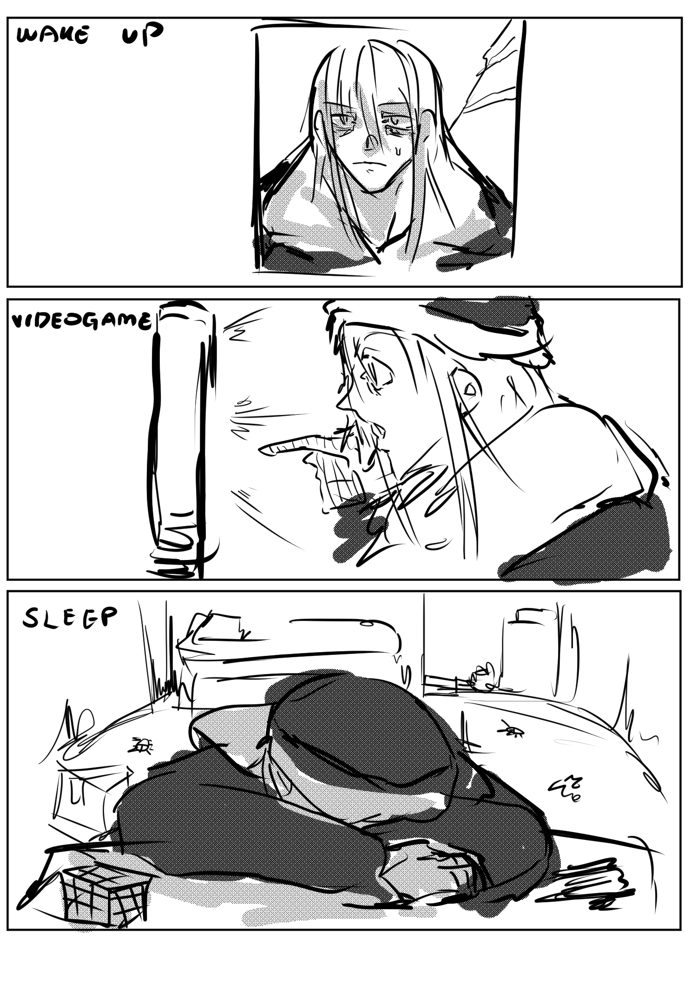",
        "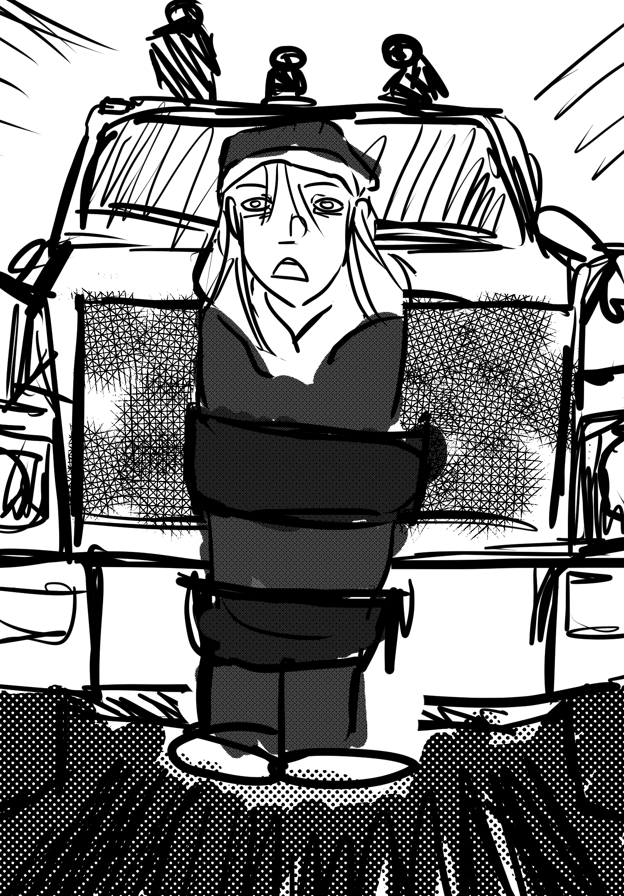",
        "<p>As you can see, our beloved Andy is currently taped to the front of a truck going at 100 km/h.</p><p>This is definitely far superior to any alarm clock you can find at IKEA.</p><p class='d'>ANDY: Whar.</p><p>It took Andy a solid 12 seconds and a flying sheet of a wanted poster of a literal nobody criminal scum to hit his face before he even realized what was going on.</p><p class='d'>ANDY: YO WHHHAAAAT TTTHHHHHHHHHHEEEEEEEEEEEEEEEE FUUUCCCCCCCCCCKKKKKKKKKKKKKKKKK</p><p class='d'>ANDY: YOU TORTILLA LOOKING ASS PUT ME DOWN RIIIGHHTT NOOOOOWWWWWW</p><p>Andy felt... absolutely terrible. No way he got done like that in his sleep. Like, sure, he sleeps like a corpse, but being taped to the front of a truck and still not waking up has surely got to be a side effect of sleep deprivation from all those late-night gaming sessions.</p>",
        "<p>Eitherway, the truck driver, a hideous man with a mohawk and black tattoo imprints plastered all over his face, had his jaw unhinged the entire time. His eyes weren't even focused on the road, he was screaming in ecstasy like a drug addict finding a bag of heroin.</p><p class='d'>BIG CATCH, BIG CATCH, A BIG HIT OF THE UNDERWORLD IS TAPED TO THE FRONT OF A TRUCK!!!</p><p>He slammed his palm on the steering wheel several times as his right foot press harder on the accelerator pedal of the truck.</p><p class='d'>HAHAHAH THIS WAR IS SO FUN!!!</p><p>Without remorse, the truck rams over a few cars in front including a small hatchback, a family SUV, and another hatchback with a probationary sticker on the back window. Andy, who was taped to the front of the truck, managed to survive getting crushed by all three cars. A bunch of skinless hands, functioning as impact cushions, slipped down from his body.</p>",
        "<p>The tape restraining Andy and plastering him to the bumper of the truck began to come loose from the crash.</p><p> He wiggled his body around, finally causing the tape to tear apart. Andy went flying to the side of the truck, he was already braced for the landing on rough asphalt when the driver's hand caught him by the wrist, causing the bandages on Andy's arm to slide down by a modicum.</p><p>The driver stuck his head—and tongue—out the window, maintaining eye contact with Andy through the side mirror, screaming with pure cockiness in his tone.</p><p class='d'>BY CLAIMING THAT PRICE TAG ON YOUR HEAD, 'WE,' AND I MEAN OUR ENTTIIIREEEE FAAACTION WILL BE ABLE TO LIVE WITHOUT WORRY FOREVER! WE'LL HAVE EVERYTHING!!! EEEVERYTTHIINNGGGG!!!!!!!!!'<p>Andy's face crumpled into a look of fear and sheer disgust.</p>",
        "<p class='d'>ANDY: I just want to live a normal life! Why do you guys always come and ruin it!?!!!</p><p>The driver looked at Andy's reflection in the side mirror for a second, then he adjusted the mirror and burst out laughing.</p><p>At that exact moment, a pair of skinless hands emerged from the gearbox and slowly hopped towards the brake pedal and the accelerator.</p><p><strong>SLAM.</strong></p><p>The truck came to an abrupt stop, moved forward once again, stopped, and moved again for a bit. Two hands were visibly seen stomping and bouncing on both the brake pedal and accelerator in a motion similar to juggling a ball.</p><p>The truck was in a chaotic state. The driver lost his grip on Andy’s hand as he took notice of these cheeky entities, stomping down on both of them until they were nothing more than steaming chunks of ruined flesh, surprisingly more scared of the truck's condition than of seeing literal ugly hands walking around.</p>",
        "<p>Chunks of Andy's sleeve, his bandages, and his already fucked up hand ripped off when he bounced off the asphalt. He pushed through the awful pain and clutched onto the back bumper of the truck.</p><p>Mister driver right here looked at the side mirror and couldn't see Andy's corpse laying on the road.</p><p class='d'>HEY! Get your asses off of the roof and check the trailer! Useless fucking tards!</p><p>One of the three men punched another's elbow lightly after he pointed towards the trailer and the other person took a step back as he whipped his pistol out.</p><p>One of them, the one with a ski mask, swung into the trailer. He hopped off and grabbed the top hood thingy so he wouldn't get wrecked by the momentum. He hopped in the trailer and the first thing he saw was a bunch of skinless hands taped to the walls inside like an infestation of cockroaches.</p><p>He pulled out his weapon immediately in shock, doing his best to stay far away from the walls.</p>",
        "<p>From behind him, Andy was already winding up a punch. The initial swing seemed to be dodged though Andy did not stop attacking. He sent a left jab twice that couldn't connect and a right hook that actually landed. The man tried whipping his pistol in a crescent motion but Andy tilted his body back. The man fired a shot, two actually, but Andy dodged both of them and delivered a punishing punch that sent him staggering back, chained with an onslaught of jabs and punches to pressure the man against the wall.</p><p>When the man finally got too close to the adjacent wall, the hands sitting dormant leeched onto his throat and restrained him, pressing in deeper and deeper until the fingers punctured his neck, causing blood to spill with no signs of stopping.</p><p>Then another challenger appeared from behind Andy. One hand went flying and slammed his head onto the wall, straight up crushing his skull.</p><p>Gunshots came from above. There was one more guy right there.</p>",
        "<p><em>He's trying to play it safe...</em></p><p>Thumping and the sound of a body dropping from the trailer was heard not long after, as a patch of skinless hands from the walls had already disappeared. Moved.</p><p>Andy let out a gruff exhale.</p><p>His body swayed lightly and he clutched onto his naked, bleeding hand, whispering under his breath.</p><p class='d'>ANDY: Fuck this... I just want a normal life, I just want a normal life, I just want a normal life, I just want a normal life...</p><p>The truck was speeding up, even going airborne for a split second.</p>",
        "<p><strong>A supernatural, diverse phenomenon amongst individuals, something that is caused by one's forcibly altered biology and a mystical touch.</strong></p><p><strong>Only in ≈0.008–0.05% of individuals, a spontaneous genomic variance results in a strange combination of genes.</strong></p><p><strong>An otherworldly disturbance would visit those who die unsatisfactorily.</strong></p><p><strong>Resulting in what is known as <em>'Oddities'</em>.</strong></p>",
        "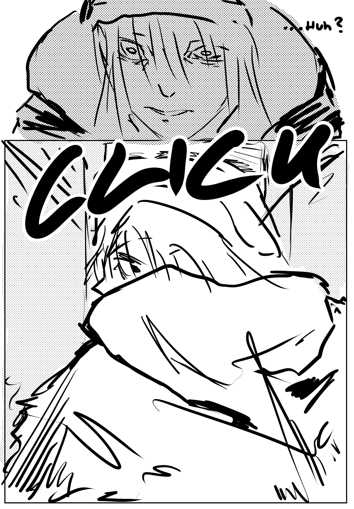",
        "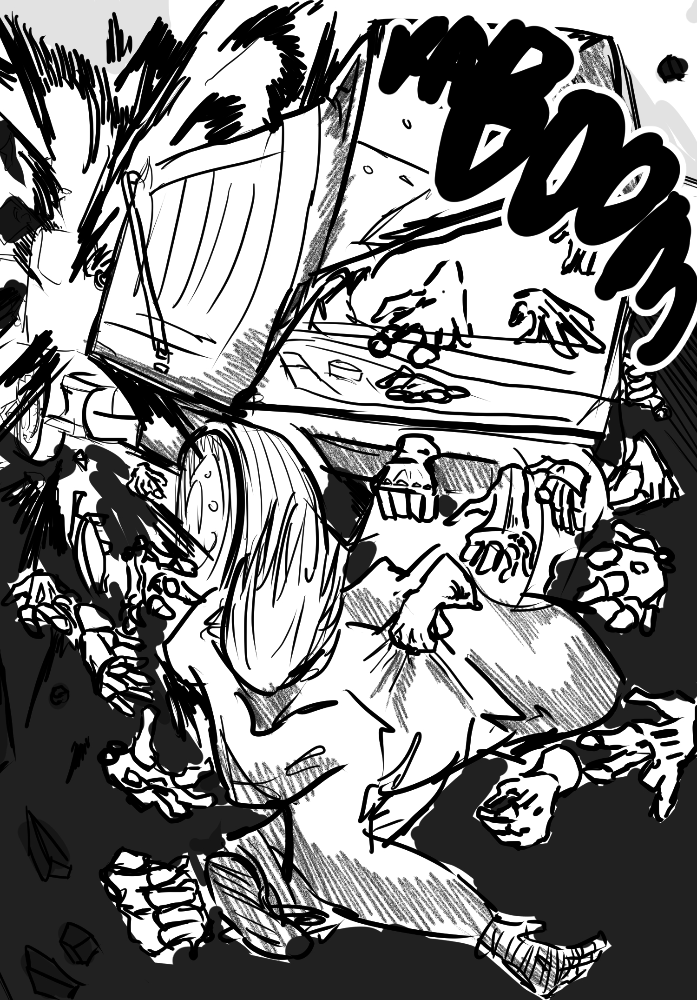",
        "<p><em>Fool's Loophole</em> rushed towards Andy, enveloping him in a defensive cocoon and would soon splatter outward when he tumbled on the ground.</p><p>He came out unscathed for the most part. The only injuries worth accounting for were the torn skin and ringing ears if those even counted, and maybe the fact that there were three trucks through his eyes, at least, slowly converging as his vision steadied back together.</p><p>He pushed himself forward using his forearms instead, coughing off dust as he took gentle steps towards his beanie that had gone flying and landed in between two pieces of large rubble.</p><p><em>This is how it should be.</em></p><p><em>So don't apologize anymore.</em></p><p>He straightened up before sucking in air through his nose and mouth until it felt satisfactory.</p>",
        "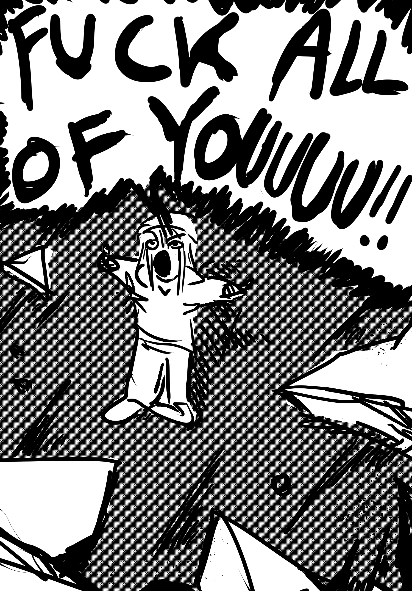",
        "<p>Andy was flipping off the crowd of cars stacked in front of him without realizing it, but even if he did become aware of it, he wouldn't give a shit. He'd had enough of his inner harmony being violated without consent.</p><p>One of the car honks stood out. A familiar voice called after him.</p><p class='d'> YOO</p><p>Andy looked over where the voice came from. There was a dude in office attire, wearing those unremarkable one-sided glasses along with a curtain cut.</p>",
        "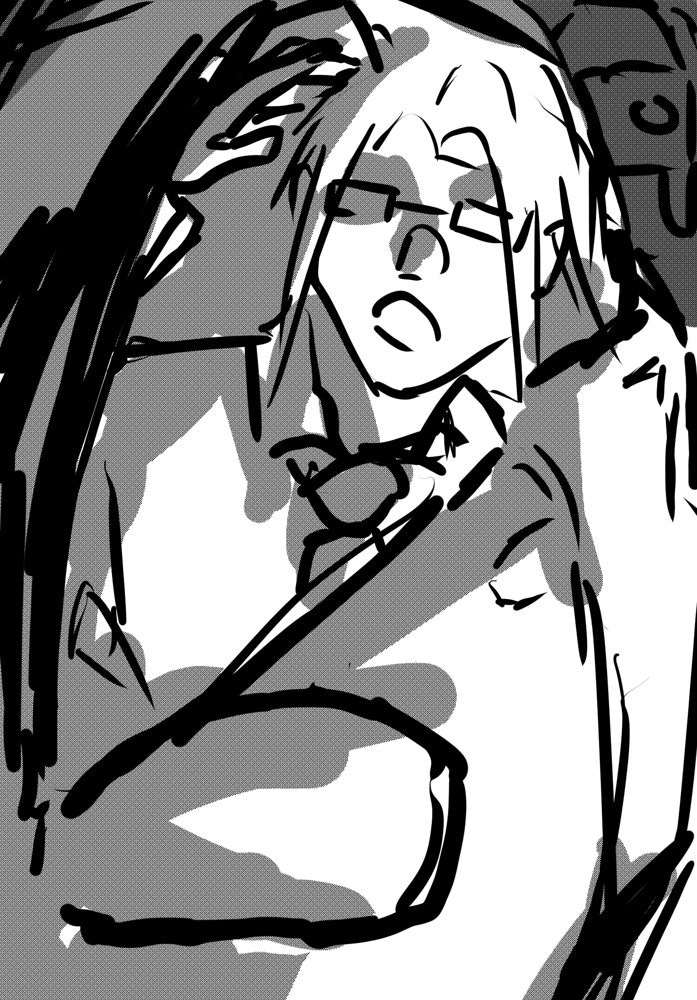",
        "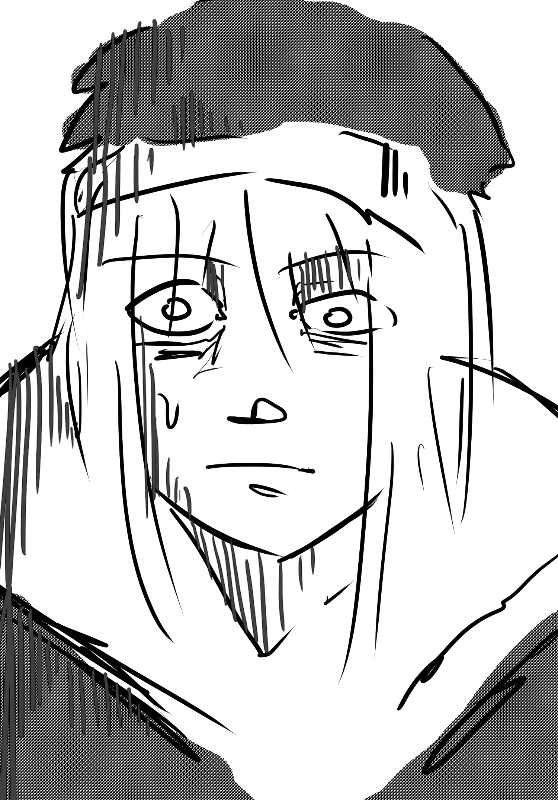",
        "",
        "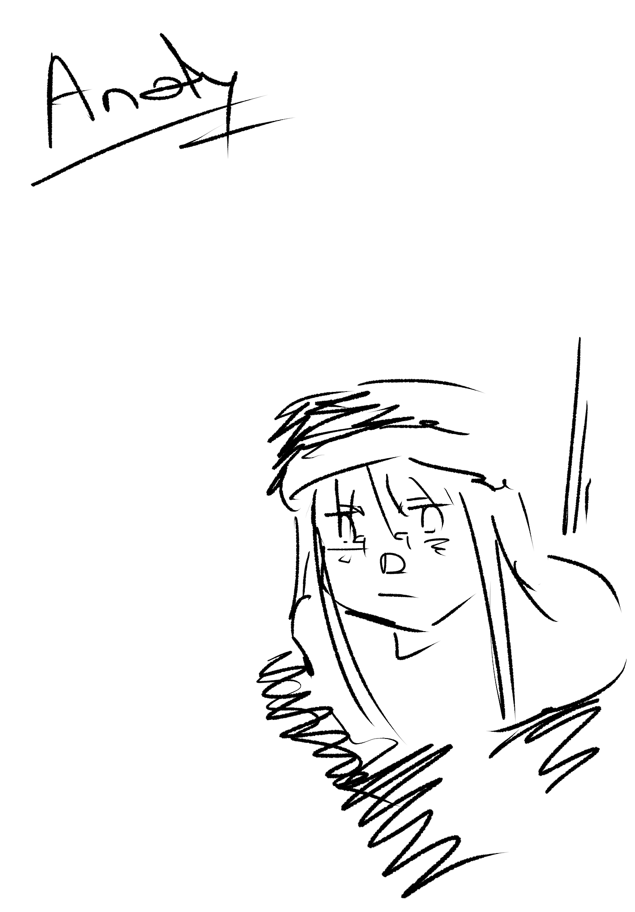"
    ];
</script>

    <main class="book-spread">
        <div class="nav-zone left-zone" onclick="prevPage()"></div>
        <div class="nav-zone right-zone" onclick="nextPage()"></div>
        <article class="page" id="L-PAGE"><div class="content" id="L-C"></div></article>
        <article class="page" id="R-PAGE"><div class="content" id="R-C"></div></article>
    </main>

    <footer class="footer-nav"><a href="index.html" class="menu-btn">RETURN</a></footer>

<script>
    /* ENGINE */
    let currentSpread = 0;
    function updatePages() {
        const lC = document.getElementById('L-C'), rC = document.getElementById('R-C');
        const lP = document.getElementById('L-PAGE'), rP = document.getElementById('R-PAGE');
        const lData = MY_STORY[currentSpread * 2] || "";
        const rData = MY_STORY[(currentSpread * 2) + 1] || "";
        lC.innerHTML = lData; rC.innerHTML = rData;
        lData.includes(' 0) { currentSpread--; updatePages(); } }
    updatePages();
</script>
</body>
</html>
